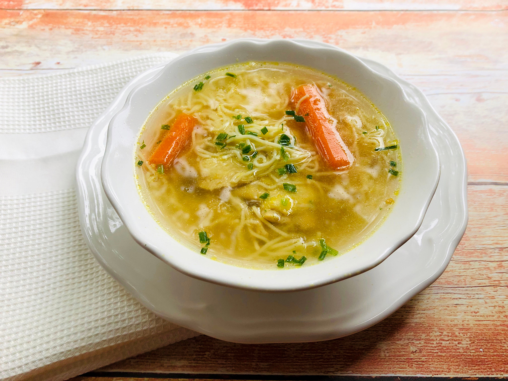
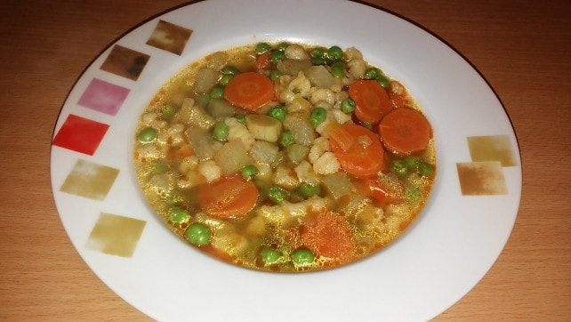
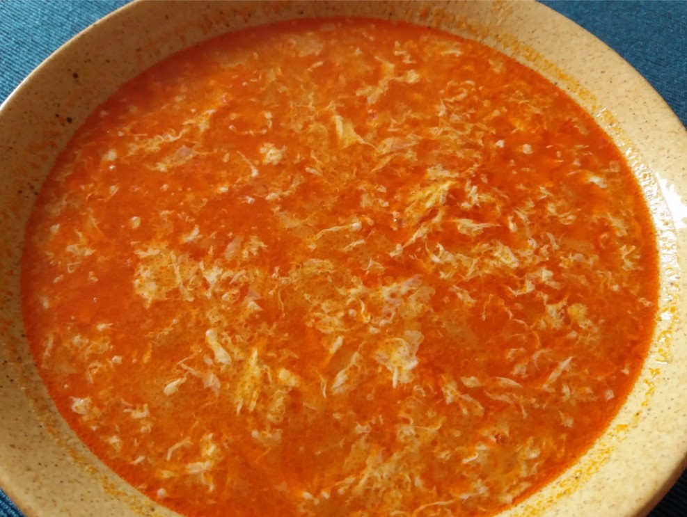
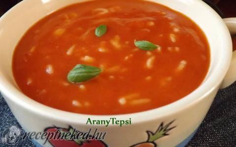
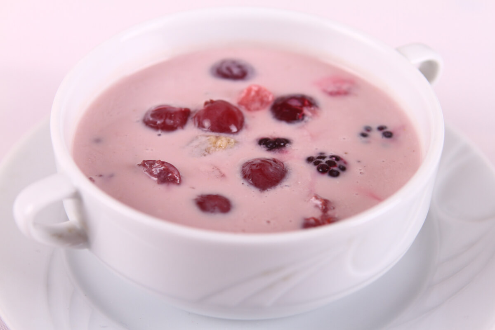

<html lang="hu">
<head>
    <meta charset="UTF-8">
    <title>Levesek</title>
    <link rel="stylesheet" href="second.css">
</head>
<body style="background-color:#121212 ;"></body>
    <h1>A kedvenc leveseim</h1>
    <h2 >Húsleves</h2>
    <p>Otthoni a legjobb</p>
    <a href="https://www.nosalty.hu/receptek/kategoria/levesek/husleves?"; target="_blank"></a>
    <p class="box"></p>
    <h2>Borsóleves</h2>
    <p>Borsó nélkül</p>
    <a href="https://www.nosalty.hu/recept/edes-borsoleves-galuskaval"; target="_blank"></a>
    <p class="box"></p>
    <h2>Tojásleves</h2>
    <p>Megosztó vélemények hallhatók róla</p>
    <a href="https://www.nosalty.hu/recept/10-perces-tojasleves"; target="_blank"></a>
    <p class="box"></p>
    <h2>Paradicsomleves</h2>
    <p>Betűtéßtával</p>
    <a href="https://www.nosalty.hu/recept/egyszeru-paradicsomleves-betutesztaval"; target="_blank"></a>
    <p class="box"></p>
    <h2>Gyümölcsleves</h2>
    <p>Hidegen a legjobb</p>
    <a href="https://www.nosalty.hu/receptek/kategoria/levesek/gyumolcsleves?"; target="_blank"></a>
    <p class="box"></p>
    <h3><a href="index.html">Vissza a kezdőlapra</a></h3>
</body>
</html>